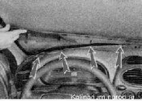

Панель приборов снятие и установка
На автомобилях первых выпусков панель приборов можно демонтировать, предварительно сняв с нее щиток приборов и другие съемные детали. На автомобилях поздних выпусков (укомплектованных подушкой безопасности переднего пассажира) панель приборов можно снять только в сборе с отопителем.
Снятие
1. Подготавливаем автомобиль к выполнению работы и отсоединяем клемму от отрицательного вывода аккумуляторной батареи.
2. Сливаем охлаждающую жидкость из двигателя.
3. Ослабив хомуты 1, отсоединяем шланги системы охлаждения от патрубков радиатора отопителя.
Торцовым ключом на 10 мм отворачиваем гайку 2 крепления радиатора отопителя к перегородке моторного отсека.
4. Снимаем фильтрующий элемент фильтра вентиляции салона.
5. Крестовой отверткой отворачиваем четыре самореза крепления корпуса фильтра.
6. Извлекаем корпус фильтра из короба воздухозаборника.
7. Снимаем облицовку туннеля пола и накладки рулевой колонки.
8. Если на автомобиле установлено головное устройство аудиосистемы (магнитола) снимаем ее в соответствии с инструкцией по установки.
9. Из-под полки для мелких вещей извлекаем жгут проводов и разъединяем колодки.
10. Аналогично разъединяем колодки жгутов панели приборов, расположенные под монтажным блоком предохранителей и реле.
Колодки проводов различаются формой и количеством выводов, поэтому перепутать их невозможно. Но для упрощения сборки можно пометить колодки маркером или записать порядок их подсоединения.
11. Торцовым ключом на 10 мм отворачиваем гайку крепления воздуховода.
12. Приподняв воздуховод, выводим его из зацепления со шпилькой и отсоединяем от отопителя.
13. Разъединяем колодки проводов, проложенные под воздуховодом.
14. Ключом на 13 мм отворачиваем два болта крепления кронштейнов консоли панели приборов к туннелю пола (второй болт с правой стороны туннеля).
15. Отсоединив уплотнители и поддев отверткой, снимаем накладки с передних стоек кузова.
16. Возле стоек кузова, воротком с крестовым наконечником отворачиваем два самореза крепления накладки панели приборов.

17. Преодолевая сопротивление держателей, снимаем верхнюю накладку панели приборов. Торцовым ключом на 10 мм отворачиваем семь гаек (расположенные под снятой накладкой) крепления панели приборов к кузову.

18. Торцовым ключом на 13 мм отворачиваем две гайки крепления панели приборов к кузову. С одной из шпилек снимаем наконечник провода «массы».
19. Отсоединяем рулевую колонку от балки панели приборов и опускаем ее на сиденье либо снимаем рулевую колонку.
20. Торцовым ключом на 13 мм отворачиваем три болта крепления поперечины панели приборов к кронштейну педального узла.
21. Поддевая шлицевой отверткой, снимаем правую и левую боковые накладки панели приборов.
22. Торцовым ключом на 13 мм отворачиваем болты крепления поперечины панели приборов (по два с каждой стороны).
23. Снимаем панель приборов в сборе с отопителем.
Установка
Устанавливаем собранную панель приборов в сборе с отопителем в обратной последовательности.